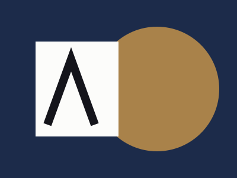
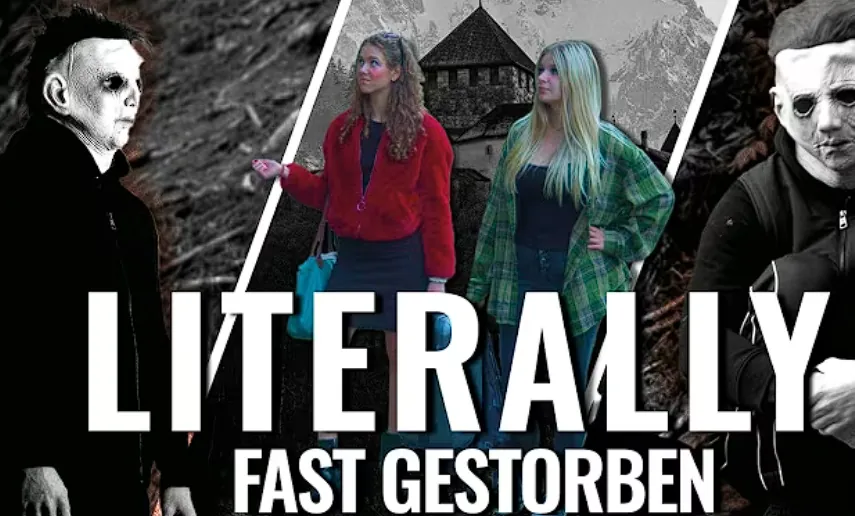
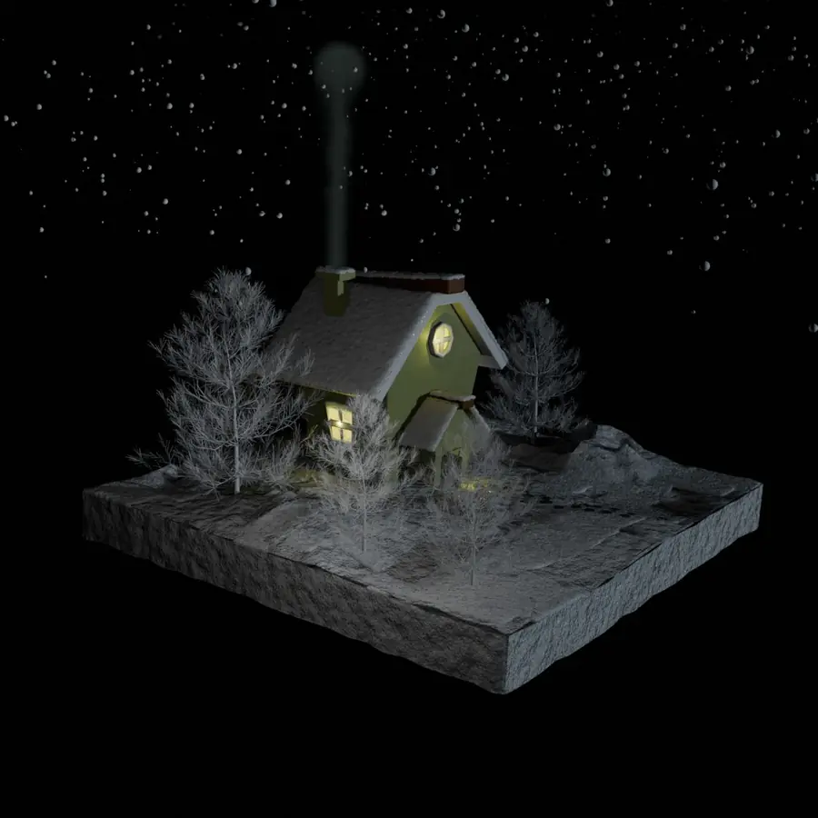
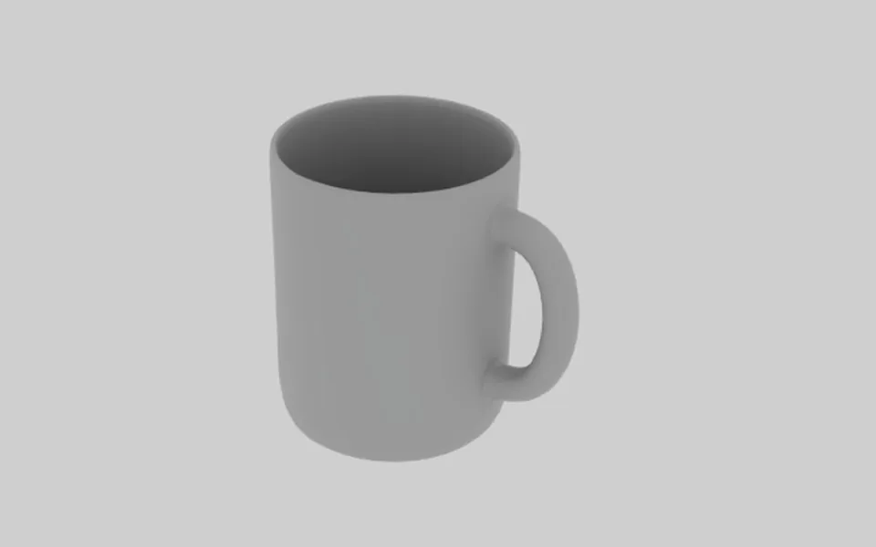

Portfolio · Medientechnik
DAVID KUKIĆ
Gestaltung, Web und 3D
Ich besuche die HTBLuVA Villach. Hier zeige ich meine Arbeiten und womit ich gestalte.
Projekte ansehenLebenslauf (PDF)01Projekte
- 01

MGI Studios Rebrand
Meine Diplomarbeit: ein neues Erscheinungsbild für die Branding-Agentur MGI Studios.
Rolle: Corporate Design, Website und Print
- 02

Literally fast gestorben
Kurzfilm aus der Projektwoche an der HTBLuVA Villach, gedreht an der Burg Finstergrün.
Rolle: Klappe, Licht und Abspann (Teamprojekt)
- 03

Winterhaus
3D-Szene in Blender: ein verschneites Haus bei Nacht mit Rauch, Licht und Schneeflocken.
Rolle: Modellierung, Texturen, Licht und Effekte (Einzelarbeit, 3. Klasse)
- 04

3D-Objekte in Maya
Modelle aus der 4. Klasse: Auto, Kaffeetasse, Glasflasche, Spiegel und Häuser.
Rolle: Modellierung (4. Klasse)
02Über mich
Mich interessiert alles zwischen Gestaltung und Technik: Layouts, Webseiten, 3D-Modelle und Spiele.
Gestaltung und Branding
Logos, Corporate Design und Layouts, bisher mit Illustrator und InDesign.
3D und Motion
3D-Modelle in Blender und Maya und Animationen in After Effects.
Web
Webseiten mit HTML, CSS, JavaScript und PHP.
Werdegang
Schule
- 2022 – heuteHTBLuVA Villach, Medientechnik
Aktuell mit der Diplomarbeit, einem Rebranding für MGI Studios.
- 2018 – 2022Peraugymnasium
Praxis
- Sommer 2025Praktikum, Wasserversorgungsverband Faaker See
Kundenakten verwalten und Pläne einscannen.
03Skills
Gestaltung
04- AiIllustrator
- IdInDesign
- PsPhotoshop
- WdWebdesign
Motion und 3D
04- AeAfter Effects
- BlBlender
- MyMaya
- GdGodot
Web und Daten
05- HtHTML
- JsJavaScript
- PhPHP
- SqSQL
- GhGitHub
Office
03- WoWord
- PpPowerPoint
- ExExcel
04Lebenslauf
Ausbildung, Praktikum, Skills und Sprachen auf einer Seite.
- Sprachen
- Kroatisch (Muttersprache), Deutsch, Englisch
05Kontakt
Du hast ein Projekt und suchst Verstärkung? Ich wäre gern dabei. Schreib mir einfach eine E-Mail.
E-Mail schreibendavidkukic41@gmail.com